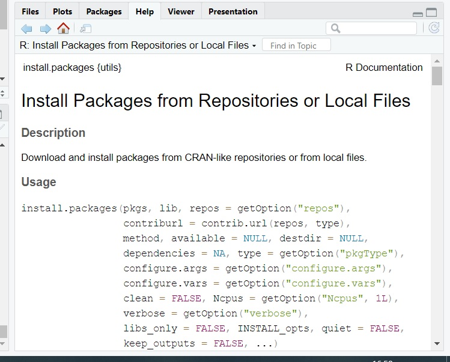
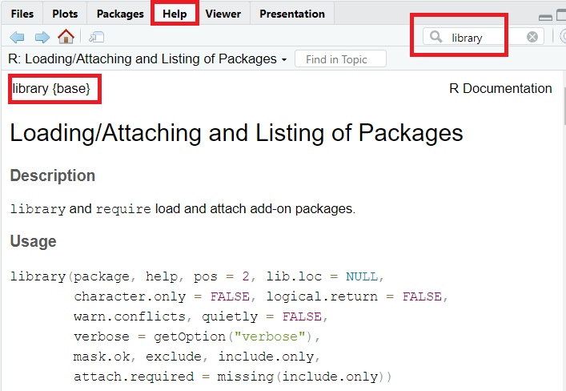
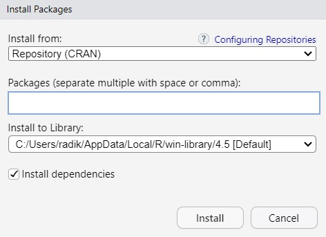
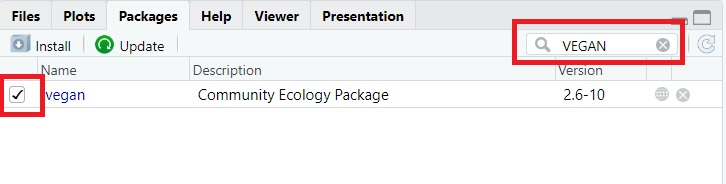
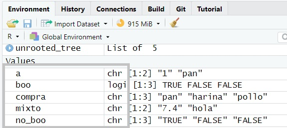

#a=2+32 podemos ver en nuestro Environment que la variable 'a' no se ha creado
b=2+2 #si corremos esta línea, veremos que la variable b si se ha creadoPrincipios básicos y estructuras de datos
0. Consideraciones previas
0.1 Ejecución de código
Para ejecutar el código escrito en el editor de código, podemos hacerlo de dos maneras:
- Seleccionando la línea de código a ejecutar o poniendo el cursor en dicha linea, y pulsando el botón run situado en la parte superior derecha del editor.
- Poniendo el cursor en la línea a ejecutar y pulsando ctrl + enter
0.2 Comentar scripts
Para poder comentar código, pondremos el símbolo # delante del comentario a realizar. Así pues, todo el texto y símbolos precedidos por # no serán ejecutados. Veamos un ejemplo:
0.3 Recuperar comandos ejecutados
En R podemos saber qué comandos hemos ejecutado anteriormente de dos maneras:
- Si nos situamos en la consola y le damos al botón ^ de nuestro teclado, podremos ver la orden inmediatamente anterior
- ¿otra forma?
0.4 Directorio de trabajo
En nuestro directorio de trabajo es donde quedarán todos los archivos que guardemos (si lo hacemos con código).
Important
Antes de empezar a trabajar es MUY IMPORTANTE establecer el directorio de trabajo. Debemos tener cuidado, de lo contrario, podemos trabajar en otro directorio y sobreescribir ficheros, variables, etc.
Podemos establecer nuestro lugar de trabajo de dos maneras:
- Click en Session (panel superior) > Set working directory > Choose directory, y elegimos la carpeta de trabajo.
- Con el siguiente comando:
setwd("C:/Users/radik/Desktop/Curso Microbiota R/CursoMicrobiota")#setwd(directoriodeinteres)Para comprobar en qué directorio nos encontramos, lo haremos por código:
getwd()#no introducimos ningun argumento0.5 Visualizar elementos
Durante el desarrollo de nuestros scripts nos puede resultar útil y necesario visualizar el contenido de los elementos que tenemos en nuestro ambiente.
Si queremos visualizar los elementos en la pantalla del editor de scripts, lo haremos así
View(b)#podemos visualizar todo tipo de variables
#¡OJO! la 'V' tiene que ir en mayuscula; R es sensible a las mayusculas y minusculasSi queremos visualizar el elemento completo, escribiremos el nombre del elemento directamente en la consola:
bSi nos enfrentamos a un elemento de gran tamaño (una lista, una tabla con muchas filas), y solo queremos ver el encabezamiento, usaremos este comando:
head(b)Si queremos solo visualizar el final del elemento, lo haremos con el comando tail(), tal que así:
tail(b)0.6 Búsqueda de ayuda
Habrá ocasiones en las que deseemos conocer información sobre un comando o una función concreta de un paquete (por ejemplo, qué tipo de variables de entrada acepta, cómo funciona, valores de salida, etc.). Para acceder a la documentación de la función concreta, existen varias maneras de proceder:
- Con comandos
?install.packages() #despues del simbolo '?' escribimos el nombre de la funcion de interes
help("install.packages")#es exactamente lo mismo, nos devuelve la misma información
help(package="vegan")#nos proporciona toda la informacion de un paquete de interes (su descripcion, versiones y listado de funciones que incluye)A continuación se abrirá en el visor inferior derecho, en la pestaña Help toda la información sobre el uso de dicha función (Figura 1).

- Interactivamente Debemos ir al panel inferior derecho y en la pestaña Help, buscar en la lupa el nombre de nuestra función de interés, tal y como se indica en la Figura 2.

- Buscar en Google u otro buscador la documentación oficial.
Toda la información que nos da el comando ? o el panel de ayuda (opciones a y b) está disponible en Google, y en foros de grandísima utilidad como Stack overflow.
- Inteligencia Artificial
Se desaconseja enormemente el uso de cualquier tipo de chatbot para búsquedas sencillas que Google u otros buscadores pueden realizar. ¡Ahorremos energía!
1. Instalación de paquetes de R
R base incluye varios paquetes con funciones básicas, pero no son suficientes para nuestros análisis. Por ello, necesitamos instalar paquetes (conjuntos de funciones con un objetivo similar) que han sido desarrollados por otros usuarios (o por nosotros mismos) que están disponibles en repositorios públicos, como CRAN. La descarga e instalación de los paquetes puede realizarse de dos maneras:
- Mediante código
install.packages("ggplot2") #incluir el nombre del paquete siempre entre " "Una vez que hemos instalado de los repositorios los paquetes, debemos cargar las librerías y todo su contenido. Para ello:
library(ggplot2)#OJO! Aquí no es necesario entrecomillar el nombre del paquete
Warning
Cada vez que habramos una sesión de R Studio, debemos cargar las librerías, de lo contrario, no encontrará las funciones cuando las llamemos. Pero NO es necesario que instalemos de nuevo los paquetes. Una vez que hemos instalado los paquetes estos ya quedan en nuestro ordenador, y aunque cerremos la sesión de R Studio, los paquetes quedarán en nuestro PC.
- Interactivamente Para ello, iremos al panel inferior derecho y haremos click en la pestaña Packages. Haremos click en el botón Install (debado de la cinta de pestañas, a la izquierda). Se nos abrirá una pantalla (Figura 3).

En la opción packages introduciremos el nombre del paquete a instalar. Dejaremos seleccionada la opción install dependencies.
Una vez instalados, debemos cargar los paquetes. Para ello, buscaremos el nombre de nuestro paquete en el listado. Si no lo encontramos, lo buscamos con la lupa, tal y como se muestra en la Figura 4.

Es importante que seleccioneis el paquete que buscabais para que se cargue la librería. Para comprobar que se ha cargado, podéis comprobar que en la consola os sale la orden ‘library(paquetecargado)’, tal y como se hace por código.
2. Clases en R
En R tenemos muchas clases o tipos de datos diferentes. La Tabla 1 resume las clases principales.
| Clase | Ejemplo |
|---|---|
| Numérico (numeric) | 2.5 |
| Entero (integer) | 2 |
| Carácter (character) | Hola |
| Factor (factor) | Color (Blanco/negro) |
| Lógico (logic) | TRUE/FALSE |
| Perdido (na) | NA |
| Vacío (null) | NULL |
2.1 Numérico (integer) y entero (integer)
Entero: datos numéricos sin parte decimal. Numérico: contienen una parte decimal, fraccionaria
No es objeto de este curso repasar las operaciones matemáticas en R, pero se pueden consultar en este link.
2.2 Carácter (character)
Se encuentran compuestos por letras, números, espacios, signos de puntuación y/o símbolos especiales. A las cadenas de caracteres se les conoce como strings.
Aparecen y se indican entrecomillados.
Note
Una única cifra (o un conjunto de cifras) pueden ser de tipo carácter. Debemos tener cuidado con esto, ya que podemos querer que R trate a una(s) cifra(s) como carácter(es), por ejemplo, para que no sea posible aplicar operaciones matemáticas sobre ellas. Puede ser interesante en el caso de tratar los nombres de las muestras en un proyecto de microbiota/bioinformática.
2.3 Factor
Se trata de variables categóricas, es decir, que tienen un número concreto de niveles (levels). Es decir, son clasificadores, variables de agrupación. Un ejemplo: etapa de desarrollo (factor), con 5 niveles: semilla, plántula, joven, adulto, senescente.
No nos debemos dejar llevar por la apariencia. A simple vista, podemos ver que el contenido de una columna aparenta que se trata de variables de tipo carácter porque están compuestas por letras y/o números, pero puede que se trate de factores. Al fin y al cabo, las variables de tipo factor pueden estar compuestas por caracteres.
2.4 Lógico
Se trata de clases que solo pueden tomar dos valores: TRUE o FALSE, es decir, si cumplen o no una condición. También se conocen como clases booleanas.
2.5 Perdido y vacío
Perdido (na): se trata de datos perdidos, por ejemplo, datos que no han sido registrados o que han sido omitidos. Son datos faltantes. Se suelen representar como NA.
Vacío (null): representan la ausencia de datos, es decir, un comando nos puede devolver NULL cuando intente recuperar un dato y no lo encuentre (por ejemplo, porque lo hemos borrado).
Asignaciones, cambios de clase y determinación del tipo de clase
Cuando queramos crear una variable y asignarle un valor, usaremos el operador ‘=’ o ‘<-’
a = "hola que tal" #creo una variable que contiene ese texto
b <- "hola que tal" #idem
#NOTA: no importa si antes y después de los operadores incluimos un espacio.
a==b #¡¡¡OJO!!! Dos simbolos '=' seguidos NO es para realizar una asignacion, sino para preguntarle si los dos elementos son iguales
identical(a,b) #a==b es equivalente a identical(a,b)
7==8 #le estamos preguntando si 7 es igual a 8, nos debe devolver FALSE
7 != 8 #el operador '!=' significa "diferente de". En este caso debe devolver TRUEPara saber de qué clase es nuestro objeto:
class(a)
class(b)Para determinar o cambiar de clase:
a=as.character("hola")
b=as.factor("hola")
desarrollo=factor(c("semilla","semilla","plantula","joven","adulto","joven","senescente"))# 'c' indica que vamos a introducir un vector, donde cada elemento del mismo equivale a un nivel del factor. Lo veremos en el apartado 3.
levels(desarrollo)#nos muestra los niveles de un factor
a=as.integer(2.1+3.2)#vemos que al llamar a la variable 'a' nos devuelve el valor 5
b=as.numeric(2.1+3.2)#ahora, la variable nos devuelve 5.3Si quieres conocer más cosas sobre los operadores en R, haz click en [este link] (https://bookdown.org/jboscomendoza/r-principiantes4/operadores.html) donde vienen muchos más detalles.
3. Tipos de objetos o estructuras en R
Las clases son tipos de datos, pero estos pueden estar almacenados en diferentes tipos de objetos o elementos. Así pues, podemos tener diferentes tipos de objetos que almacenen diferentes datos de diferentes clases. Veamos los ejemplos.
3.1 Vectores
Se trata de una colección de elementos o conjunto de datos del mismo tipo o clase. Es la estructura mínima de R.
Para crearlos, debemos preceder a la lista de elementos del vector la letra c, y los elementos tienen que estar entrecomillados:
compra = c("pan", "harina", "pollo")
class(compra)
precios=c("1.50","3.75","6.98")
mixto=c("7.4","hola")
class(mixto)#OJO! el valor 7.4 lo toma como carácter, pues todos los elementos han de ser del mismo tipo/clase
boo=c(TRUE,FALSE,FALSE)#como no están entrecomillados, los toma como booleano
class(boo)
no_boo=c("TRUE","FALSE","FALSE")
is.vector(no_boo)#es para preguntarle directamente si es un vectorPara saber de forma rápida y visual de qué tipo son mis vectores, basta con buscarlos en el panel de Environment, tal y como se aprecia en la Figura 5:

Podemos fusionar vectores, incluso de diferentes tipos. R de forma automática realizará una coerción, una fusión de los mismos. R determina automáticamente la clase resultante, que será la más universal (generalmente, caracter). Comprobémoslo:
precios_compra=c(precios,compra)
class(precios_compra)
precios_compra #coloca uno inmediatamente después del otro.3.1.1 Operaciones con vectores
- Podemos conocer la longitud de los vectores:
length(precios_compra) #longitud: 6- Conocer el elemento que ocupa una posición del vector. Basta con poner la posición entre corchetes, tras el nombre del vector
precios_compra[2] #que acceda al elemento en la posición 2- Modificar un vector. Debemos asignar el nuevo valor a la posición que queremos modificar:
#queremos cambiar el segundo precio, por 0.49:
precios_compra[2]="0.49"
precios_compra #comprobamos todo el contenido del vector
precios_compra[2] #comprobamos el contenido en la posición 2
#añadir elementos a un vector (añadir también es 'modificar' un vector)
precios_compra[7]= "gelducha"
precios_compra- Preguntas al vector
Podemos interaccionar con los vectores, y preguntarles si un elemento es igual, mayor, menos que otro valor; cuál es la cifra máxima y mínima de un vector numérico, entre otras.
precios[3] > 6.97
which.max(precios) #NO nos devuelve el valor máximo, sino la POSICIÓN que ocupa el valor máximo
#Ejercicio: escribe en UNA sola línea de código el valor máximo del 'precios'- Operaciones matemáticas: puesto que no emplearemos demasiadas operaciones matemáticas, no procede explicarlas en detalle. Tan solo que para aplicar una función matemática a todos los elementos de un vector basta con indicarlo tal que así:
resta= precios - 1 #debe guardarse el resultado en un nuevo vector
precios
resta
log_todos=log(precios) #hay funciones que se aplican al conjunto de elementosEjercicio: crea un vector llamado ‘productos’ que contenga estos elementos: manzanas, pan, leche, huevos, queso. Crea otro llamado ‘importe’ que contenga estos elementos numéricos: 1.2, 2.5, 1.0, 3.0, 4.5. Calcula el importe de la compra total si compramos de unidades de cada producto, y dime cuál es el producto más barato.
3.2 Matrices y arrays
-Matrices: se pueden considerar como vectores multidimensionales. Tienen una estructura rectangular, y no lineal como la que tienen los vectores. Todos los elementos de la matriz han de ser de la misma clase. Solo tienen dos dimensiones: ancho x largo
-Arrays: son matrices de múltiples dimensiones, por ejemplo, cúbicas. No trabajaremos con arrays.
Creemos una matriz:
matriz_34=matrix(1:12, nrow = 3, ncol = 4)# 3 filas y 4 columnas
matriz_34 #podemos observar que va ordenando en columnas en vez de en filas.3.2.1 Creación de matriz por fusión de vectores
Existen dos funciones muy comunes para crear matrices a partir de vectores: cbind y rbind
-cbind: column binding, esta función fusiona vectores por columnas, es decir, anexando una columna al lado de la otra
-rbind: row binding, fusiona vectores por filas, es decir, anexando un vector debajo de otro
altura=c(7.5, 12.8, 11.7, 7.1)
peso=c(96, 74, 85, 75.3)
col_fusion=cbind(altura,peso)
col_fusion #vemos que la columna 1 equivale a la altura, y la segunda al peso
row_fusion=rbind(altura, peso)#justo se disponen al reves
class(col_fusion);class(row_fusion) #nos dice "matrix" y "array" porque una matrix no es más que un array de 2dimPodemos renombrar los nombres de las columnas y/o las filas, puesto que en este ejemplo vemos que no son muy explicativos.
#comprobamos los nombres de columna y fila en cada variable
colnames(col_fusion)
rownames(col_fusion)#NULL
colnames(row_fusion)
rownames(row_fusion)
#Cambiamos el nombre de las filas/columnas por unos más definitorios:
row.names(col_fusion)=c("Arbol1", "Arbol2", "Arbol3", "Arbol4"); col_fusion
colnames(row_fusion)=c("Arbol1", "Arbol2", "Arbol3", "Arbol4"); row_fusionLa notación de las posiciones en una matriz será, siempre: [filas,columnas]
row_fusion[1,2]# fila 1, columna 2: valor 12.8Si queremos designar todas las filas o todas las columnas, podemos poner dejar la posición vacía, tal que:
#quiero ver toda la primera fila (todas sus columnas)
row_fusion[1,]Para seleccionar posiciones en un rango concreto, basta con indicar el rango separado por dos puntos:
#quiero ver las columnas 2 y 3 de row_fusion
row_fusion[,2:3]Para no seleccionar columnas o filas concretas, debemos indicarlo con el signo - delante de la posición de las columnas o filas correspondientes:
#quiero quitar la columna 1 de row_fusion
row_fusion2=row_fusion[,-1]
row_fusion2 #vemos que falta la columna 1Podemos conocer las dimensiones de una matriz/array del siguiente modo
dim(row_fusion) #MUY interesante: nos devuelve el numero de filas, y el numero de columnas. Esta estructura se repetirá en el apartado 3.3 Dataframes
dim(col_fusion)Ejercicio: Crea una matriz de 4 filas (una por estudiante) y 3 columnas (una por asignatura) que contenga las calificaciones de unos alumnos: 7, 8, 6, 5, 9, 7, 8, 6, 9, 6, 7, 8. Añade el nombre a los estudiantes (Rafa, Lazaro, Patricia, Carmen), y a las materias (RStudio, Estadistica, Ecologia). Calcula el promedio de las notas de Rafa Calcula el promedio de las notas de todos los alumnos en Estadistica
¿Qué estudiante obtuvo la mejor nota en Ecologia?
Descalificamos a todos los alumnos con 1 punto por llegar tarde a clase, ¿qué notas tendrán los alumnos en todas las asignaturas?
3.3 Dataframes
Son estructuras de datos rectangulares (2 dimensiones) que pueden estar compuestas por datos heterogéneos, es decir, por datos de cualquier clase. Podrían considerarse como la agrupación de vectores, pues los datos incluidos en la misma columna (considerando cada columna como si fuera un vector) han de ser de la misma clase. Son una de las estructuras más empleadas en ciencias de datos.
Generalmente, los datos se distribuyen de la siguiente manera: -Filas: en cada fila tendremos las instancias, esto es, los datos relativos a cada individuo objeto de estudio. En el caso de comunidades microbianas, cada fila corresponde a la información de cada uno de los taxones. -Columnas: en cada columna se indican los valores de cada una de las variables medida o registrada para cada individuo. En el caso de comunidades microbianas, en cada columna tendremos el recuento o número de secuencias detectadas en cada una de las réplicas.
head(iris)#dataframe incluido en todas las distribuciones de R
tail(iris)
dim(iris)
#vemos que contiene los valores de 5 variables determinadas para 150 plantas3.3.1 Acceso a los elementos del dataframe
Existen varias maneras de acceder a cada uno de los vectores que componen el dataframe:
- Mediante el signo $, precediendo el nombre de la columna deseada:
especie=iris$Species- Mediante corchetes, incluyendo el número de columna concreta:
sepalo_l=iris[1]
sepalos=iris[,1:2]- Mediante corchetes, incluyendo el nombre de la columna concreta entrecomillado:
sepalo_w=iris["Sepal.Width"]3.3.2 Crear dataframes
Se pueden crear de muchas maneras:
#a partir de una matriz:
df1=as.data.frame(matriz_34)
colnames(df1)=c("Pan","Huevos","Leche","Mejillones")3.3.3 Subset de elementos
Podemos crear una nueva variable seleccionando elementos concretos de un dataframe.
#ejemplo: seleccionar todos aquellos individuos clasificados como 'setosa'
setosa=subset(iris, Species== "setosa")#se queda con todos los valores de todas las variables de aquellas filas que cumplen una condicion concreta
#ejemplo: seleccionar todos aquellos individuos clasificados como 'virginica', y que ademas, la longitud del sepalo sea > 6.5
v_65= subset(iris, Species== "virginica" & Sepal.Length > 6.5)# el simbolo '&' se emplea para indicar una 'adición' de condiciones3.3.4 Otras operaciones
Los dataframes se pueden manipular en multitud de maneras diferentes:
#trasposición:
t_v_65=t(v_65)#vemos que las columnas pasan ahora a ser filas
#reemplazo de caracteres:
v_65$Species=gsub("virginica", "virgi.", v_65$Species)#gsub atributos: caracter a reemplazar, reemplazo, elemento donde realizar el reemplazo
#concatenacion de strings:
v_65$full_sepal=paste0(v_65$Sepal.Length, "_",v_65$Sepal.Width)
#aplicar operaciones matematicas a una seleccion de objetos:
#que calcule la media de todas las variables en base a un factor de agrupacion concreto (por ejemplo, la media de las 4 variables para cada tipo de planta)
media_todas=aggregate(cbind(Sepal.Length, Sepal.Width, Petal.Length, Petal.Width) ~ Species,
data = iris,
FUN = mean)
mediana_petal_w_3=aggregate(Petal.Width ~ Species,#indicamos la variable numerica y el factor de agrupacion
data = subset(iris, Sepal.Width < 3), #en este punto selecciona los individuos que cumplen la condicion dada
FUN = median)Ejercicio: Filtra el conjunto iris para quedarte solo con las flores que tienen un Petal.Length mayor a 4.5. Luego, calcula la media de Sepal.Width para cada especie (Species) en este subconjunto filtrado.
3.3.5 Operadores ‘Pipes’
En el ejercicio anterior hemos realizado las operaciones en dos líneas, generando una nueva variable de filtrado. Para evitar la creación de nuevas variables que quizá nunca más las vamos a utilizar, se suelen usar los operadores de tipo ‘tubería’ o ‘pipes’ (%>%)
Estos permiten encadenar varias operaciones de manera clara, de tal forma que el resultado de la primera operación, es el input o la entrada de la segunda operación, y así sucesivamente:
seto=subset(iris, Species == "setosa")
summary(seto)#obtenemos un resumen detallado de los estadisticos descriptivos principales
#en una sola linea podriamos tambien escribirlo asi:
summary(subset(iris, Species == "setosa"))
#de forma mas clara, en orden secuencial:
iris %>% subset(Species == "setosa") %>% summary()#primero, toma el dataframe 'iris'. Segundo, realiza una seleccion. Tercero, haz el resumen estadistico.Vemos que es una forma de evitar paréntesis anidados que pueden llevarnos a errores.
3.4 Listas
Las listas son los elementos más flexibles de R pues son estructuras que permiten almacenar todo tipo de datos diferentes, heterogéneos.
No tienen porqué tener estructura rectangular como los dataframes. Se asemejan más a un contenedor subdividido en diferentes compartimentos. Por lo tanto, una lista tiene solamente una dimensión.
3.4.1 Creación y acceso a las listas
Para tener un índice del contenido de la lista, usaremos paréntesis cuadrados:
#creamos la lista
vector = 1:10
matriz = matrix(1:4, nrow = 2)
df= data.frame("num" = 1:3, "letra" = c("a", "b", "c"))
lista =list("un_vector" = vector, "una_matriz" = matriz, "un_df" = df)
lista#nos muestra el nombre de los tres elementos, y su contenido
View(lista)#nos permite ver algo similar a un indicePara acceder a cada elemento de la lista, podemos:
- Indicar el número del elemento o el nombre del mismo entre corchetes:
lista[1]#vemos el contenido y el nombre del vector. A veces, se le denomina 'sublista'
lista[[1]]#vemos directamente el contenido del vector, sin el nombre del mismo
names(lista)#esta funcion nos permite ver el nombre de todos los elementos de la lista
lista["un_vector"]
lista[["un_vector"]]- Indicar el símbolo $ seguido del nombre del elemento de la lista
lista$un_vector
#si el elemento a visualizar es un dataframe, y queremos ver una columna concreta de dicho dataframe, usaremos el simbolo $ dos veces:
lista$un_df$letra #nos muestra el contenido de la columna llamada 'letra' del dataframe llamado 'un_df'Ejercicio: Crea una lista llamada alumno que contenga:
Nombre: “Laura” Edad: 22 Notas: un vector de 3 notas: 8.5, 9.0, 7.8 Aprobado: TRUE
Luego, accede al vector de notas y calcula la media de las notas
Ejercicio: Crea una lista llamada empresa que contenga:
Nombre de la empresa: “EEZ-Spinoff” Años de funcionamiento: 5 Empleados: una sublista con los nombres de 3 empleados: “Ana”, “Pedro”, “Luis” Facturación anual: un vector con las facturaciones de los últimos 3 años: 1.5, 2.0, 2.8
Accede a la sublista de empleados y muestra el nombre del segundo empleado. Calcula la facturación media de los últimos 3 años.
3.5 Carga y guardado de objetos
Para cargar tablas o archivos en R, se emplean diferentes funciones de R base, las cuales dependerán del tipo de objeto.
#Cargar objetos desde nuestro directorio:
datos_excel=read.csv("archivo.csv", header = T, sep = ",")#un csv separado por comas
datos_txt =read.table("ruta/al/archivo.txt", header = TRUE, sep = "\t")#un archivo de texto separado por tabuladores
objeto_rds = readRDS("ruta/al/archivo.rds") #un objeto RDS de R, guardado con el comando saveRDS()
load("ruta/al/archivo.RData") #cargar un objeto rda con todas sus variables
#Guardar objetos
write.csv(iris, file = "iris.csv", row.names = FALSE)
write.table(iris, file = "iris.txt", sep = "\t", row.names = FALSE
saveRDS(mi_objeto, file = "mi_objeto.rds")